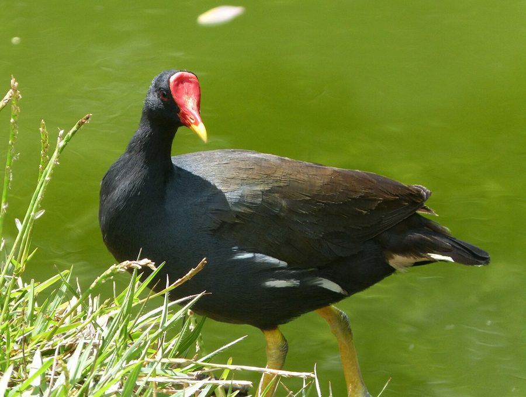

जलमुर्गीCommon Moorhen
Gallinula chloropus · Rallidae · BRD-0057

- Scientific name
- Gallinula chloropus (Linnaeus, 1758)
- Family
- Rallidae
- Hindi
- जलमुर्गी
- Status here
- native
- IUCN
- LC
When to look कब देखें
Present all year.
जलमुर्गी / Common Moorhen
Gallinula chloropus (Linnaeus, 1758) — Rallidae
जलमुर्गी (कॉमन मूरहेन) — पूर्वी उत्तर प्रदेश के ग्रामीण तालाबों, झीलों, नहरों और दलदली इलाकों में पाया जाने वाला एक छोटा, गहरे स्लेटी-काले रंग का अत्यंत सामान्य जलपक्षी है। इसकी सबसे बड़ी पहचान इसकी चोंच के ऊपर बना चमकीला लाल माथा और चोंच (bright red frontal shield and bill) है जिसका सिरा पीला होता है, तथा इसके पंखों के किनारों पर बनी एक सफ़ेद पट्टी (white flank stripe) और सफ़ेद रंग की पूंछ के नीचे का हिस्सा (white undertail) है। यह पानी की सतह पर तैरते समय अपनी गर्दन को आगे-पीछे हिलाने (head-bobbing action) की क्रिया के लिए जाना जाता है। यह अक्सर तालाबों के किनारे तैरती हुई वनस्पतियों (जैसे जलकुंभी या कमल के पत्तों) पर अपने बड़े पैरों के बल दौड़ता है और लगातार अपनी पूंछ को ऊपर-नीचे हिलाता (tail-flicking) रहता है। रात के सन्नाटे में ग्रामीण तालाबों से आने वाली इसकी तीखी और विस्फोटक आवाज "कुर्रुक" (explosive "kurruck" call) इसके होने का मुख्य संकेत है।
Quick Identification त्वरित पहचान
| Feature | Description |
|---|---|
| Size | Medium-sized waterbird (30–35 cm total length); chicken-like profile and swimming action |
| Colouration | Slate-black body with olive-brown back; white line running along the flank; white undertail patch |
| Frontal Shield | Bright red fleshy shield extending up the forehead; bill is red with a yellow tip |
| Bare Parts | Legs and long unwebbed toes are bright greenish-yellow, with a red garter-like band above the joint |
| Behaviour | Swims with a jerky head-bobbing motion; constantly flicks tail, flashing the white undertail |
| Walking | Walks easily on floating leaves; runs across water with wings flapping when startled |
Field tip: Look for them swimming near the edge of village ponds with lots of weeds. Watch for a dark bird with a red bill and a yellow tip that keeps bobbing its head as it swims. If it walks on floating plants, look for the white line along its side. The female resembles the male and is shown in the field tip.
Morphology आकारिकी
Biometrics (typical measurements in the northern Indian plains):
| Measurement | Range |
|---|---|
| Total length | 300–350 mm |
| Wing (flattened chord) | 165–185 mm |
| Tail | 65–80 mm |
| Tarsus | 45–52 mm |
| Bill (culmen from base) | 35–42 mm |
| Weight | 250–400 g |
Plumage: The plumage is mostly dark slate-grey, becoming blackish on the head and neck. The mantle, back, and wings are deep olive-brown. A distinct, bold line of white feathers runs along the lower flanks. The undertail coverts are white, split by a central black stripe. The underparts are grey, with white feather tips on the belly. The breeding plumage is slightly darker and glossier.
Bare parts: The gape, bill, and frontal shield are bright red, and the bill tip is greenish-yellow. The irises are red-brown. The legs and long, slender, unwebbed toes are greenish-yellow, with a orange-red band (garter) above the tibiotarsal joint.
Vocalisations
Common Moorhens are highly vocal, producing calls throughout the day and night.
- Territorial call: A sharp, explosive, nasal croak, kurruck or krick, repeated rapidly.
- Alarm call: A short, metallic clucking sound, kip or kik, uttered when startled or when flying into cover.
Behaviour & Ecology व्यवहार और पारिस्थितिकी
- Swimming & Walking: Swims with a characteristic jerky, head-bobbing action. Its long, unwebbed toes are designed to distribute its weight, allowing it to walk on floating leaves of Water Lilies and Water Hyacinth (Eichhornia crassipes) without sinking.
- Foraging: An omnivore that feeds on the water surface or on floating mats. It takes seeds, water weeds, small insects, snails, and tadpoles.
- Flashing display: Flicks its short tail continuously when walking, exposing the white undertail coverts. This is a visual communication signal to other moorhens and a warning display to predators.
Life Cycle / Phenology जीवन चक्र
- Breeding season: June to September in northern India, matching the monsoon season when ponds are full and reeds are dense.
- Nesting: Builds a bulky, cup-shaped platform nest of dry grass and reeds.
- Nest site: Hidden inside dense reeds or built on a floating platform of weeds, anchored to reeds or hanging branches near the water level.
- Clutch size: 5 to 9 warm buff-coloured eggs, spotted with reddish-brown.
- Incubation: 21–22 days, shared by both parents.
- Fledging: Chicks are covered in black down and leave the nest within a few days of hatching (precocial). They are fed by both parents and fledge in 45–50 days.
Host Plants or Prey आहार
Primary food items:
- Plants: Seeds and shoots of water plants, including Duckweed (Lemna minor), Azolla, and hydrilla.
- Insects: Water beetles, bugs, flies, and grasshoppers near pond edges.
- Other invertebrates: Freshwater snails (such as the Ramshorn Snail Indoplanorbis exustus), small crabs, and earthworms.
- Amphibians: Tadpoles and small grass frogs.
Predators / Natural Enemies शत्रु
- Raptors: Western Marsh Harriers (Circus aeruginosus) and eagles prey on adults and fledglings.
- Reptiles: Large water snakes (Xenochrophis piscator) and monitor lizards raid nests to consume eggs and chicks.
- Mammals: Jackals, mongoose, and feral dogs hunt them at the water margins.
Agricultural / Human Relevance कृषि प्रासंगिकता
Weed controller. By feeding heavily on invasive weeds like Hydrilla (Hydrilla verticillata) and Water Hyacinth shoots, Common Moorhens help keep village ponds open and clean.
Conservation and legal status: Protected under Schedule IV of the Wildlife Protection Act, 1972. They are generally tolerant of human presence but are threatened by the complete clearance of pond-edge vegetation, water pollution from laundry soaps and pesticides, and local poaching.
Expected Locally स्थानीय रूप से अपेक्षित
Not a field record. Written from published accounts for eastern Uttar Pradesh. No confirmed local sighting yet — if you have seen it, that is what the atlas needs.
अभी तक स्थानीय पुष्टि नहीं। यह विवरण प्रकाशित स्रोतों से है, किसी अवलोकन से नहीं।
A very common resident throughout the Basti district. They can be found in almost every village pond (talab), drainage canal, and swamp in the Harraiya, Basti, and Vikramjot blocks. They are frequently observed feeding on floating mats of water hyacinth alongside White-breasted Waterhens.
Distribution वितरण
Global range: Widespread across Europe, Africa, Asia, and the Americas.
In India: Found throughout the plains and hills up to 1,500 metres, wherever marshy habitats exist.
In Uttar Pradesh: An abundant resident state-wide in all rural and semi-urban water bodies.
In Basti district / eastern UP: Regularly recorded year-round in all blocks near wetlands and slow canals.
Research Questions शोध प्रश्न
Anyone can investigate these | कोई भी इन प्रश्नों की जाँच कर सकता है
- How many times per minute does a swimming Common Moorhen bob its head? — Count and compare head-bobbing rates in open water versus near cover.
- Do Moorhens prefer nesting in Cattail beds over Water Hyacinth mats in Basti? / क्या जलमुर्गी बस्ती में पटेर (Cattail) के बिस्तरों में घोंसला बनाना जलकुंभी (Water Hyacinth) के पत्तों की तुलना में अधिक पसंद करती है? — Locate and map active nests.
- What is the frequency of tail-flicking in Moorhens when foraging in open areas compared to sheltered reeds? — Document antipredator displays.
- How do Common Moorhens and White-breasted Waterhens share territorial boundaries in a small village pond? — Record chases and vocal disputes between the two species.
- Does the use of pond water for livestock washing affect the nesting success of Moorhens? / क्या मवेशियों को नहलाने के लिए तालाब के पानी के उपयोग से जलमुर्गी के घोंसलों की सफलता पर कोई प्रभाव पड़ता है? — Compare nesting numbers in busy versus quiet ponds.
Similar Species मिलती-जुलती प्रजातियाँ
| Species | Key Difference | हिंदी |
|---|---|---|
| Common Coot (Fulica atra) | Slightly larger; entirely white bill and frontal shield; lacks white line on the side; dives frequently | लालखर — सफ़ेद चोंच और माथा, पेट पर सफ़ेद पट्टी का अभाव |
| White-breasted Waterhen (Amaurornis phoenicurus) | White face and breast; dark grey back; rufous undertail; lacks red frontal shield | डहुआ — सफ़ेद चेहरा और छाती, लाल चोंच का अभाव |
| Grey-headed Swamphen (Porphyrio poliocephalus) | Much larger; bright purple-blue body; massive red bill and shield; red legs | कैम — बहुत बड़ा आकार, चमकीला नीला रंग |
Field rule: Slate-black waterbird with a bright red bill and frontal shield tipped with yellow, a white line along the side, swimming with a jerky head-bobbing motion, is a Common Moorhen.
Taxonomy & Classification वर्गीकरण
Original description. Carl Linnaeus described the Common Moorhen as Fulica chloropus in 1758 in his Systema Naturae (ed. 10, vol. 1, p. 152). The type locality was England. Brisson placed it in the genus Gallinula in 1760. The genus name Gallinula is Latin for a little hen. The specific name chloropus comes from the Ancient Greek chloros (greenish-yellow) and pous (foot), referencing its leg colour.
Subspecies. Five subspecies are recognized globally. The nominate subspecies resident in UP and South/East Asia is:
| Subspecies | Authority | Range | Notes |
|---|---|---|---|
| G. c. chloropus | (Linnaeus, 1758) | Europe, North Africa, and Asia to Japan | UP subspecies; nominate form; widely distributed across the Palearctic |
Family and order placement. Placed in the order Gruiformes, family Rallidae (rails, crakes, and coots).
Phylogenetic notes. Gallinula chloropus is closely related to the Common Gallinule (Gallinula galeata) of the Americas, which was formerly treated as the same species.
IUCN status rationale. Listed as Least Concern (LC) due to its massive global range and stable population, showing high tolerance to human-altered agricultural wetlands.
Photo Gallery फोटो गैलरी
References संदर्भ
- Linnaeus, C. (1758). Systema Naturae. Tenth Edition. Holmiae, p. 152. [original description]
- Ali, S. & Ripley, S. D. (1999). Handbook of the Birds of India and Pakistan. Vol. 3. Oxford University Press, New Delhi.
- Grimmett, R., Inskipp, C. & Inskipp, T. (2011). Birds of the Indian Subcontinent. 2nd ed. Christopher Helm, London.
- Taylor, B. & van Perlo, B. (1998). Rails: A Guide to the Rails, Crakes, Gallinules and Coots of the World. Pica Press, Sussex.
- BirdLife International (2024). Gallinula chloropus. IUCN Red List of Threatened Species. Ver. 2024.
- GBIF Occurrence Data — Gallinula chloropus, Uttar Pradesh (2010–2025).
Source file: species/fauna/birds/common_moorhen.md